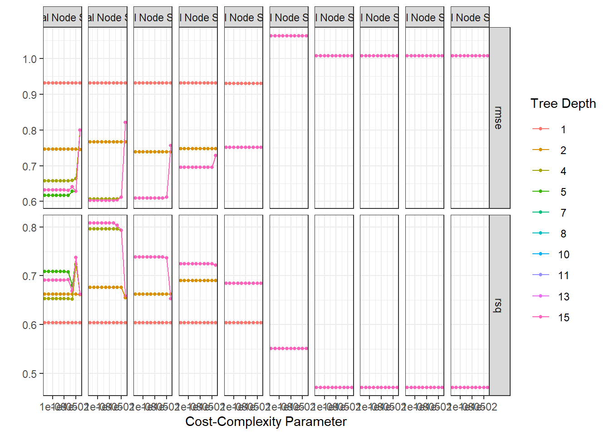
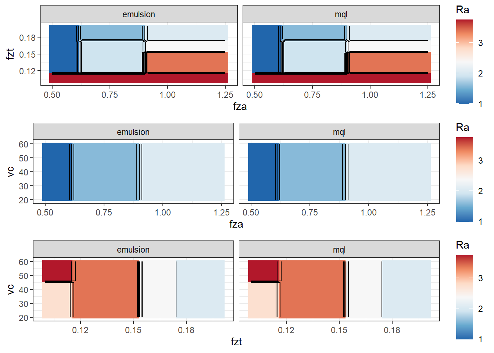

library(rsm)
library(MaxPro)
library(dplyr)
library(tidymodels)
library(rules)
library(baguette)
library(finetune)
library(ggpubr)
library(DALEX)
library(DALEXtra)
library(forcats)Ra modelling through CART
Modeling through CART to compare the results of the proposed approach.
plan <- bbd(3,
n0 = 2,
coding = list(x1 ~ (fza - 0.875)/0.375, # um/dente
x2 ~ (fzt - 0.15)/0.05, # mm/dente
x3 ~ (vc - 40)/20), # m/min
randomize = F)
plan01 <- plan[,3:5]
plan01$x1 <- (plan$x1 - min(plan$x1))/(max(plan$x1) - min(plan$x1))
plan01$x2 <- (plan$x2 - min(plan$x2))/(max(plan$x2) - min(plan$x2))
plan01$x3 <- (plan$x3 - min(plan$x3))/(max(plan$x3) - min(plan$x3))
set.seed(7)
plan_cand <- CandPoints(N = 6, p_cont = 3, l_disnum=NULL, l_nom=NULL)
plan_rand <- MaxProAugment(as.matrix(plan01), plan_cand, nNew = 6,
p_disnum=0, l_disnum=NULL, p_nom=0, l_nom=NULL)
plan_rand2 <- data.frame(plan_rand$Design)
colnames(plan_rand2) <- c("x1","x2", "x3")
plan_rand2$x1 <- plan_rand2$x1*(max(plan$x1) - min(plan$x1)) + min(plan$x1)
plan_rand2$x2 <- plan_rand2$x2*(max(plan$x2) - min(plan$x2)) + min(plan$x2)
plan_rand2$x3 <- plan_rand2$x3*(max(plan$x3) - min(plan$x3)) + min(plan$x3)
plan2 <- data.frame(plan_rand2)
plan2$fza <- plan2$x1*0.375 + 0.875
plan2$fzt <- plan2$x2*0.05 + 0.15
plan2$vc <- plan2$x3*20 + 40
set.seed(5)
plan2$run.order <- sample(1:nrow(plan2),nrow(plan2),replace=F)roughness <- read.csv("rugosidade.csv", header = T)
roughness <- roughness %>%
rowwise() %>%
mutate(Ra = mean(c_across(c('Ra1','Ra2','Ra3', 'Ra4')), na.rm=TRUE),
Ra_sd = sd(c_across(c('Ra1','Ra2','Ra3', 'Ra4')), na.rm=TRUE))
plan_ <- rbind(plan2, plan2)
plan_ <- as_tibble(plan_)
plan_ <- plan_ %>%
mutate(lc = roughness$lc,
Ra = roughness$Ra)
plan_ <- plan_ %>%
select(fza,fzt,vc,lc,Ra)set.seed(1507)
plan_split <- initial_split(plan_, strata = lc)
plan_train <- training(plan_split)
plan_test <- testing(plan_split)
set.seed(1504)
plan_folds <-
vfold_cv(v = 10, plan_train, repeats = 2)normalized_rec <-
recipe(Ra ~ ., data = plan_train) %>%
step_normalize(fza,fzt,vc) %>%
step_novel(all_nominal_predictors()) %>% ## nominal predictors to factors
step_dummy(all_nominal_predictors(), one_hot = TRUE)
cart_spec <-
decision_tree(cost_complexity = tune(),
min_n = tune(),
tree_depth = tune()) %>%
set_engine("rpart") %>%
set_mode("regression")
cart_wflow <-
workflow() %>%
add_model(cart_spec) %>%
add_recipe(normalized_rec)
p <- parameters(cost_complexity(), min_n(), tree_depth())
param_grid <- grid_regular(p, levels = 10)
tune_res1 <- tune_grid(
cart_wflow,
resamples = plan_folds,
grid = param_grid
)
# set.seed(3254)
# tune_res1 <- tune_grid(lreg_wflow, resamples = plan_folds, grid = 100)autoplot(tune_res1) + theme_bw()
collect_metrics(tune_res1) %>%
filter(.metric == "rmse") %>%
arrange(mean)# A tibble: 1,000 × 9
cost_complexity tree_depth min_n .metric .estimator mean n std_err
<dbl> <int> <int> <chr> <chr> <dbl> <int> <dbl>
1 0.0000000001 5 6 rmse standard 0.604 20 0.100
2 0.000000001 5 6 rmse standard 0.604 20 0.100
3 0.00000001 5 6 rmse standard 0.604 20 0.100
4 0.0000001 5 6 rmse standard 0.604 20 0.100
5 0.000001 5 6 rmse standard 0.604 20 0.100
6 0.00001 5 6 rmse standard 0.604 20 0.100
7 0.0001 5 6 rmse standard 0.604 20 0.100
8 0.0000000001 7 6 rmse standard 0.604 20 0.100
9 0.000000001 7 6 rmse standard 0.604 20 0.100
10 0.00000001 7 6 rmse standard 0.604 20 0.100
# ℹ 990 more rows
# ℹ 1 more variable: .config <chr>collect_metrics(tune_res1) %>%
filter(.metric == "rsq") %>%
arrange(desc(mean))# A tibble: 1,000 × 9
cost_complexity tree_depth min_n .metric .estimator mean n std_err
<dbl> <int> <int> <chr> <chr> <dbl> <int> <dbl>
1 0.0000000001 5 6 rsq standard 0.808 19 0.0571
2 0.000000001 5 6 rsq standard 0.808 19 0.0571
3 0.00000001 5 6 rsq standard 0.808 19 0.0571
4 0.0000001 5 6 rsq standard 0.808 19 0.0571
5 0.000001 5 6 rsq standard 0.808 19 0.0571
6 0.00001 5 6 rsq standard 0.808 19 0.0571
7 0.0001 5 6 rsq standard 0.808 19 0.0571
8 0.0000000001 7 6 rsq standard 0.808 19 0.0571
9 0.000000001 7 6 rsq standard 0.808 19 0.0571
10 0.00000001 7 6 rsq standard 0.808 19 0.0571
# ℹ 990 more rows
# ℹ 1 more variable: .config <chr>best_rmse <-
tune_res1 %>%
select_best(metric = "rmse")
best_rmse# A tibble: 1 × 4
cost_complexity tree_depth min_n .config
<dbl> <int> <int> <chr>
1 0.0000000001 5 6 Preprocessor1_Model0311best_rsq <-
tune_res1 %>%
select_best(metric = "rsq")
best_rsq# A tibble: 1 × 4
cost_complexity tree_depth min_n .config
<dbl> <int> <int> <chr>
1 0.0000000001 5 6 Preprocessor1_Model0311The best model considering accuracy is with …
cart_final <- finalize_workflow(cart_wflow, best_rmse)
cart_final_fit <- fit(cart_final, data = plan_train)Final model is then defined with these parameters’ levels.
augment(cart_final_fit, new_data = plan_test) %>%
rmse(truth = Ra, estimate = .pred)# A tibble: 1 × 3
.metric .estimator .estimate
<chr> <chr> <dbl>
1 rmse standard 0.527# augment(svm_poly_final_fit, new_data = plan_test) %>%
# roc_auc(truth = Ra_class, estimate = .pred_class)#######################
x1_grid <- seq(min(plan_train$fza), max(plan_train$fza), length = 30)
x2_grid <- seq(min(plan_train$fzt), max(plan_train$fzt), length = 30)
x3_grid <- seq(min(plan_train$vc), max(plan_train$vc), length = 30)
#######################
grid_12_em <- expand.grid(fza = x1_grid,
fzt = x2_grid,
vc = x3_grid, lc = "emulsion")
y_hat_12_em <- predict(cart_final_fit, new_data = grid_12_em)
grid_12_em$Ra <- y_hat_12_em$.pred
grid_12_mql <- expand.grid(fza = x1_grid,
fzt = x2_grid,
vc = x3_grid, lc = "mql")
y_hat_12_mql <- predict(cart_final_fit, new_data = grid_12_mql)
grid_12_mql$Ra <- y_hat_12_mql$.pred
grid_12 <- rbind(grid_12_em, grid_12_mql)
cp12 <- ggplot(data = grid_12,
mapping = aes(x = fza, y = fzt, z = Ra)) +
geom_tile(aes(fill=Ra)) +
facet_grid(cols = vars(lc), scales = "free") +
scale_fill_distiller(palette = "RdBu",
direction = -1) +
geom_contour(color = "black") +
theme_bw()
#######################
grid_13_em <- expand.grid(fza = x1_grid,
fzt = x2_grid,
vc = x3_grid, lc = "emulsion")
y_hat_13_em <- predict(cart_final_fit, new_data = grid_13_em)
grid_13_em$Ra <- y_hat_13_em$.pred
grid_13_mql <- expand.grid(fza = x1_grid,
fzt = x2_grid,
vc = x3_grid, lc = "mql")
y_hat_13_mql <- predict(cart_final_fit, new_data = grid_13_mql)
grid_13_mql$Ra <- y_hat_13_mql$.pred
grid_13 <- rbind(grid_13_em, grid_13_mql)
cp13 <- ggplot(data = grid_13,
mapping = aes(x = fza, y = vc, z = Ra)) +
geom_tile(aes(fill=Ra)) +
facet_grid(cols = vars(lc), scales = "free") +
scale_fill_distiller(palette = "RdBu",
direction = -1) +
geom_contour(color = "black") +
theme_bw()
#######################
grid_23_em <- expand.grid(fza = x1_grid,
fzt = x2_grid,
vc = x3_grid, lc = "emulsion")
y_hat_23_em <- predict(cart_final_fit, new_data = grid_23_em)
grid_23_em$Ra <- y_hat_23_em$.pred
grid_23_mql <- expand.grid(fza = x1_grid,
fzt = x2_grid,
vc = x3_grid, lc = "mql")
y_hat_23_mql <- predict(cart_final_fit, new_data = grid_23_mql)
grid_23_mql$Ra <- y_hat_23_mql$.pred
grid_23 <- rbind(grid_23_em, grid_23_mql)
cp23 <- ggplot(data = grid_23,
mapping = aes(x = fzt, y = vc, z = Ra)) +
geom_tile(aes(fill=Ra)) +
facet_grid(cols = vars(lc), scales = "free") +
scale_fill_distiller(palette = "RdBu",
direction = -1) +
geom_contour(color = "black") +
theme_bw()
ggarrange(cp12,cp13,cp23, nrow = 3)